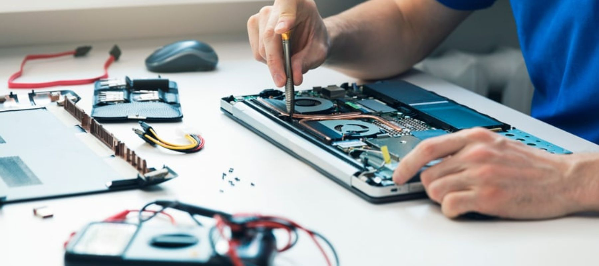

Confianza comprobada en el servicio técnico
Todas nuestras reparaciones cuentan con garantía
Evaluación completa sin costo
Reparación y mantenimiento de computadoras de escritorio con componentes variados.
Servicio especializado en notebooks y laptops de todas las marcas.
Limpieza profunda del polvo interno, cambio de pasta térmica y optimización.
Instalación y reinstalación de Windows, Linux o macOS según necesidad.
Asistencia técnica remota para problemas de software y configuración.
Disponibilidad de componentes originales y compatibles de calidad.
Reemplazo de pantallas dañadas con componentes de calidad.
Reemplazo de teclados dañados o desgastados.
HP
Lenovo
Apple
Asus
Acer
Dell
| Servicio | Precio Desde | Tiempo Estimado |
|---|---|---|
| Diagnóstico Gratuito | $0 | 30 minutos |
| Reparación de PC de Mesa | $50.000 | 2-4 horas |
| Reparación de Portátil | $60.000 | 3-6 horas |
| Limpieza y Mantenimiento | $25.000 | 1-2 horas |
| Instalación Sistema Operativo | $30.000 | 1-3 horas |
| Soporte Remoto | $20.000 | 30-60 minutos |
"Excelente servicio, muy profesionales. Mi laptop estaba totalmente muerta y la dejaron perfecta. Muy recomendado."
Reparación de Portátil
"El diagnóstico gratuito fue muy útil y los precios son muy competitivos. Repararon mi PC con garantía, muy confiables."
Reparación de PC de Mesa
"Rápido, eficiente y profesional. El soporte remoto me salvó el día cuando tenía problemas urgentes con mi equipo."
Soporte Remoto